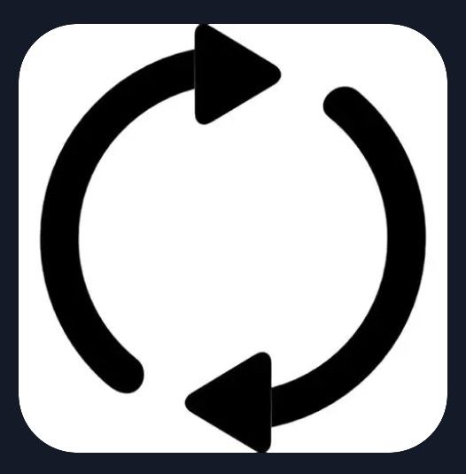
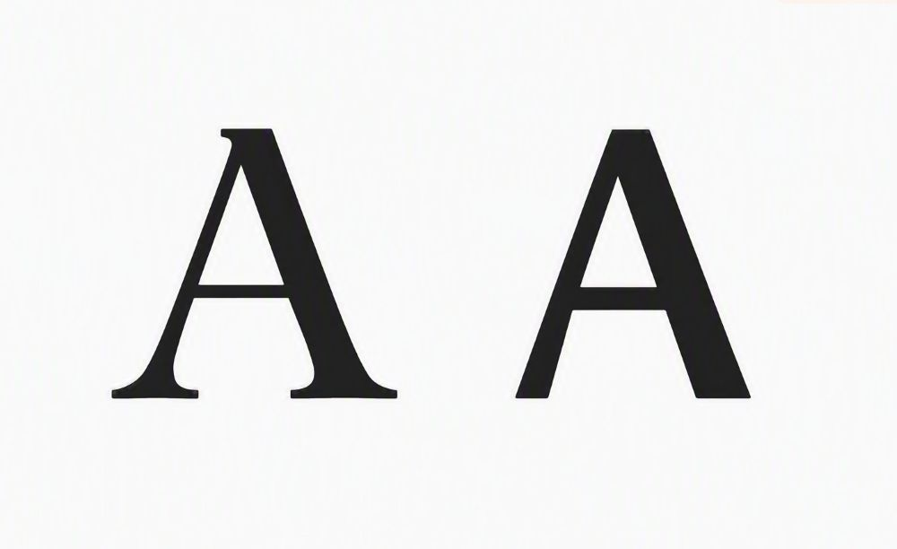
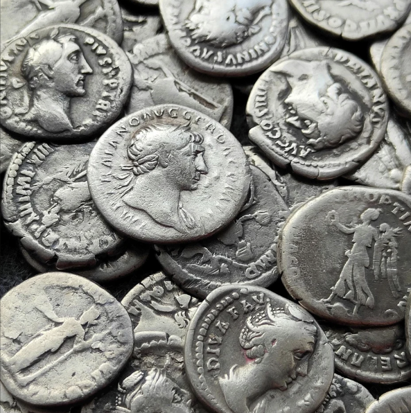
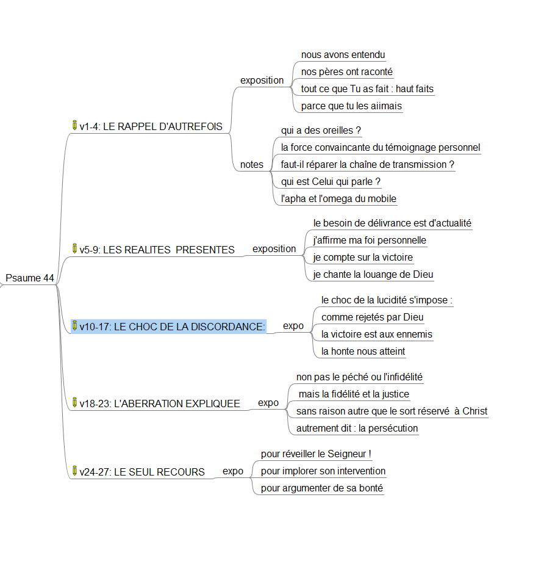

de la fidélité divine dans l’histoire passée, j’attends, dans l’épreuve actuelle, une pareille délivrance
cependant la défaite honteuse supplante le triomphe escompté, sans être le fruit du péché,
la grande idée
après la pause, les explications divines
le passage du souvenir des délivrances divines du passé et de la situation de détresse présente au plaidoyer audacieux pour le secours de Dieu s’explique
par la souveraineté de Dieu qui nous associe à Christ jusqu’à l’ignominie.
par l’argument de Sa propre bonté pour nous secourir encore
le Psaume 44
Un maskil est un psaume didactique, c’est‑à‑dire un chant conçu pour instruire, enseigner.
44 Au chef de chœur. Des descendants de Koré, cantique.
généalogie de Lévi
Moïse et Koré
cousins au service de Dieu.
comme Jean-Baptiste et Jésus ?
flowchart TD
A["<div title='3e fils de Jacob-Israêl, tribu mise à part pour le service du sanctuaire, sans territoire si ce n est 48 villes dont 6 de refuge'><b>LEVI</b></div>"] --> B(Guershom)
A --> C(**KEHATH**)
A --> D(Merari)
%% --- Sous-graph Kehath ---
C --> E(Amram)
C --> F(Jitsehar)
C --> G(Hébron)
C --> H(Uziel)
E --> I(Aaron)
E --> J(**MOÏSE**)
E --> K(Myriam)
F --> N(**KORE†**)
N --> O(Assir)
N --> P(Elkana)
N --> Q(Abiasaph)
P --> R( ... )
%% --- Sous-graph Merari ---
%% D --> L(Machli)
%% D --> M(Muschi)
descendants de Koré
Ils ne sont ni des gens d’armes, ni fonctionnaires, ni mercenaires mais des portiers-gardiens du temple et de ses trésors, des chantres, des hommes du Dieu de leur vie, guidés par la fidélité à leur Seigneur, habités du souvenir des oeuvres de l’Eternel, des hommes de coeur, émotionnels, des artistes maniant la harpe, la flûte, le chant et la poésie.
descendants de Koré
Ils incarnent les serviteurs épris de vérité et de justice, sensibles à la soif spirituelle, interrogés par les paradoxes, insultés par leurs contemporains irreligieux, mais concernés par le sort désastreux échu à leur peuple, Ils forment un groupe solidaire d’hommes de prière relevant le défi de l’intercession pour une cause apparement perdue, soucieux de transmettre à la génération suivante la véritable connaissance de Dieu, et qui s’accrochent à conserver toujours l’espérance du salut parce qu’ils ont reconnu l’amour indéfectible de Dieu pour son peuple.
type-1: la prière d’apprentissage

Reconnaître
Dieu écrit l’Histoire que
nous racontons à nos enfants
2 O Dieu1, … nous avons entendu de nos oreilles2, nos pères3 nous ont raconté tout ce que tu as accompli4 à leur époque, par le passé.
où sont les pères ?
créons des conversations spirituelles
racontons les miracles de notre temps
avec la persuasion du témoignage personnel
« Lorsque ton fils te demandera un jour : Que signifient ces préceptes, … » Deut6:20
«Nous ne le cacherons point à leurs enfants; nous raconterons à la génération future les louanges de l’Éternel, sa puissance et les merveilles qu’il a faites. » Ps78:4
les interventions passées
pour Israël, arraché à l’Egypte, transplanté comme une vigne en Canaan
pour l’Europe, libérée des indulgences par les réformateurs et de l’athéisme par les revivalistes
où sont pour nous, les miracles d’antan ?
3 De ta main tu as chassé des nations pour qu’ils puissent s’établir, tu as frappé des peuples pour qu’ils puissent s’étendre
par quelle puissance ?
nous savons
Le salut est le fruit
non pas de nos efforts
mais de Sa faveur imméritée
de Jésus qui pardonne les péchés
4 En effet, ce n’est pas par leur épée qu’ils se sont emparés du pays, ce n’est pas leur bras5 qui les a sauvés,
mais c’est ta main droite, c’est ton bras, c’est la lumière de ton visage, parce que tu les aimais6.
la prière d’application
la prière d’objection
la clarification de Dieu
la prière de plaidoyer
template
type-2: la prière-imitation

5 O Dieu1, tu es mon roi2:
ordonne la délivrance3 de Jacob!
type-2: fondements
6 Grâce à toi4 nous renversons nos ennemis, grâce à ton nom nous écrasons nos adversaires,
7 car ce n’est pas en mon arc que je me confie, ce n’est pas mon épée5 qui me sauvera,
8 mais c’est toi qui nous délivres de nos ennemis et qui fais rougir de honte ceux qui nous détestent.
où sont les ennemis ?
data = { redraw;// Reactive dependency: re-runs when button is clickedconst labels = ['Guerre','Maladie','Finances','Relations','Moi','Persécution','Catastrophes','Cqrd','Spirituel'];const metadata = {'Guerre': { desc:'Impact des conflits et guerres',url:'https://example.com/guerre' },'Maladie': { desc:'Sujets liés à la santé et aux maladies',url:'https://example.com/maladie' },'Finances': { desc:'Gestion financière et épreuves économiques',url:'https://example.com/finances' },'Relations': { desc:'Défis relationnels et sociaux',url:'https://example.com/relations' },'Moi': { desc:'Développement personnel et état d\'esprit',url:'https://example.com/moi' },'Persécution': { desc:'Expériences de discrimination ou de persécution',url:'https://example.com/persecution' },'Catastrophes': { desc:'Impact des événements naturels ou accidents',url:'https://example.com/catastrophes' },'Cqrd': { desc:'Catégorie CQRD',url:'https://example.com/cqrd' },'Spirituel': { desc:'Vie et action spirituelles',url:'https://example.com/spirituel' } };const minRatio =0.10;// 5% minimum floor per itemconst count = labels.length;const remainingBudget =1- (minRatio);// Remaining weight to distribute (55% for 9 items)// 1. Generate random weightsconst rawData = labels.map(label => ({ label,random: minRatio + remainingBudget*Math.random() }));const totalRandom = rawData.reduce((acc, d) => acc + d.random,0);return {name:"root",children: [ {name:"Categories",children: rawData.map(d => ({name: d.label,value: d.random,desc: metadata[d.label].desc,url: metadata[d.label].url })) } ] };}// --- 2. CONFIGURATION ---width =800height =500fontSize ="24px"// --- 3. HIERARCHY CALCULATION ---root= {const h = d3.hierarchy(data).sum(d => d.value).sort((a, b) => b.value- a.value);return d3.treemap().size([width, height]).paddingInner(2) (h);}// --- 4. TOOLTIP ELEMENT ---tooltip = d3.select("body").append("div").style("position","absolute").style("visibility","hidden").style("background","rgba(0, 0, 0, 0.85)").style("color","#fff").style("padding","8px 12px").style("border-radius","4px").style("font-size","12px").style("pointer-events","none").style("z-index","1000").style("font-family","sans-serif")// --- 5. CHART RENDERING ---chart = {const svg = d3.create("svg").attr("viewBox", [0,0, width, height]).attr("width","100%").attr("height","auto").style("font","12px sans-serif");const leaf = svg.selectAll("g").data(root.leaves()).join("g").attr("transform", d =>`translate(${d.x0},${d.y0})`);const link = leaf.append("a").attr("xlink:href", d => d.data.url).attr("target","_blank").style("cursor","pointer"); link.append("rect").attr("fill", (d, i) => d3.schemeTableau10[i %10]).attr("fill-opacity",0.7).attr("width", d => d.x1- d.x0).attr("height", d => d.y1- d.y0).attr("stroke","white").on("mouseover",function(event, d) { d3.select(this).attr("fill-opacity",1); tooltip.style("visibility","visible").html(`<strong>${d.data.name}</strong><br/>${d.data.desc}<br/><em>Value: ${(d.value*100).toFixed(1)}%</em>`); }).on("mousemove",function(event) { tooltip.style("top", (event.pageY-10) +"px").style("left", (event.pageX+10) +"px"); }).on("mouseout",function() { d3.select(this).attr("fill-opacity",0.7); tooltip.style("visibility","hidden"); }); link.append("text").attr("x", d => (d.x1- d.x0) /2).attr("y", d => (d.y1- d.y0) /2).attr("dy","0.35em").attr("text-anchor","middle").attr("fill","white").attr("fill","black") // <--- CHANGED FONT COLOR TO BLACK.style("font-size", fontSize).style("font-weight","bold").style("pointer-events","none").text(d => (d.x1- d.x0>50&& d.y1- d.y0>25) ? d.data.name:"");return svg.node();}viewof redraw = Inputs.button("Anew")
suite
9 Nous chantons la louange6 de Dieu chaque jour,
et nous célébrerons éternellement ton nom.
abandonnés,
– Pause.
10 Cependant tu nous as repoussés, tu nous as couverts de honte, tu ne sors plus avec nos armées.
11 tu nous fais reculer devant l’ennemi, et ceux qui nous détestent se partagent nos dépouilles.
vendus,

30 pièces
12 tu nous livres comme des brebis de boucherie, tu nous disperses parmi les nations.
13 tu vends ton peuple pour rien, tu ne l’estimes pas à une grande valeur.
insultés,
14 tu nous exposes aux insultes de nos voisins, à la moquerie et aux railleries de ceux qui nous entourent.
15 tu fais de nous le sujet d’un proverbe parmi les nations, on hoche la tête sur nous parmi les peuples.
honteux
16 Mon humiliation est toujours devant moi, et la honte couvre mon visage
17 à la voix de celui qui m’insulte et me déshonore, à la vue de l’ennemi avide de vengeance.
3. l’agent de la défaite
la souveraineté divine
4. la protestation
l’injustice écartée
5. la cause première
en Christ!
6. réveillez Dieu
qui ne dort pas!
7. type-3: la prière-plaidoyer
de Sa propre bonté
template: start of unofficial
la grande idée
flowchart TD
A["<div title=" en souvenir **de la fidélité divine** prouvée par l\\'histoire passée,">RAPPEL D'AUTREFOIS</div>"] --> C(CHOC DE LA DISCORDANCE)
B(URGENCE PRESENTE) --> C
C --> D(L'ABERRATION EXPLIQUEE)
C --> E(LE SEUL RECOURS)
click A callback "hello"
TOC

Difficile repérage
Nous avons entendu …
qui a des oreilles ?
où sont les pères ?
où vont les conversations ?
pourquoi ?
Left Column (1/3)
Key point one
je crois pareillement
je crois pareillement
je crois pareillement
pourquoi1 ?
pourquoi1 ?
pourquoi 2?
pourquoi 2?
16 Mon humiliation est toujours devant moi, et la honte couvre mon visage
17 à la voix de celui qui m’insulte et me déshonore, à la vue de l’ennemi avide de vengeance.
une injustice
18 Tout cela nous arrive alors que nous ne t’avons pas oublié et que nous n’avons pas violé ton alliance.
19 Nous n’avons pas fait marche arrière dans notre cœur, nous ne nous sommes pas écartés de ton sentier.
20 Pourtant, tu nous as écrasés dans le territoire des chacalset tu nous as couverts de l’ombre de la mort.
la cause
21 Si nous avions oublié le nom de notre Dieu et tendu nos mains vers un dieu étranger,
22 Dieu ne le saurait-il pas, lui qui connaît les secrets du cœur?
23 Mais c’est à cause de toi qu’on nous met à mort à longueur de journée, qu’on nous considère comme des brebis destinées à la boucherie.
l’ultime pétition
24 Lève-toiPourquoi dors-tu, Seigneur?
Réveille-toi, ne nous repousse pas pour toujours!
25 Pourquoi te caches-tu?
Pourquoi oublies-tu notre misère et notre oppression
26 quand nous sommes affalés dans la poussière,quand nous rampons par terre?